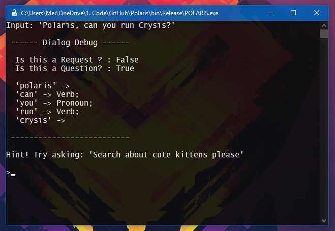
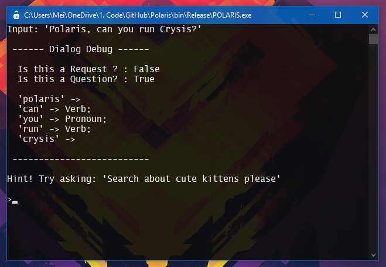
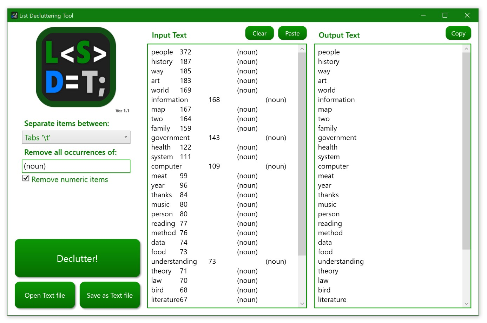

Polaris
Polaris é um interpretador de frases em inglês que analisa a sintaxe daquilo que foi escrito e, utilizando ela, consegue executar ações pré-implementadas. Foi feito para Windows e escrito em C# na .NET FrameWork 4.6.1.
Polaris é um interpretador de frases em inglês que analisa a sintaxe daquilo que foi escrito e, utilizando ela, consegue executar ações pré-implementadas. Foi feito para Windows e escrito em C# na .NET FrameWork 4.6.1.
ListDeclutteringTool é um programa que limpa a formatação e organiza grandes listas, ele facilita principalmente a formatação dados copiados de sites para usos diversos. Foi feito para Windows e escrito em C# na .NET FrameWork 4.6.1.
